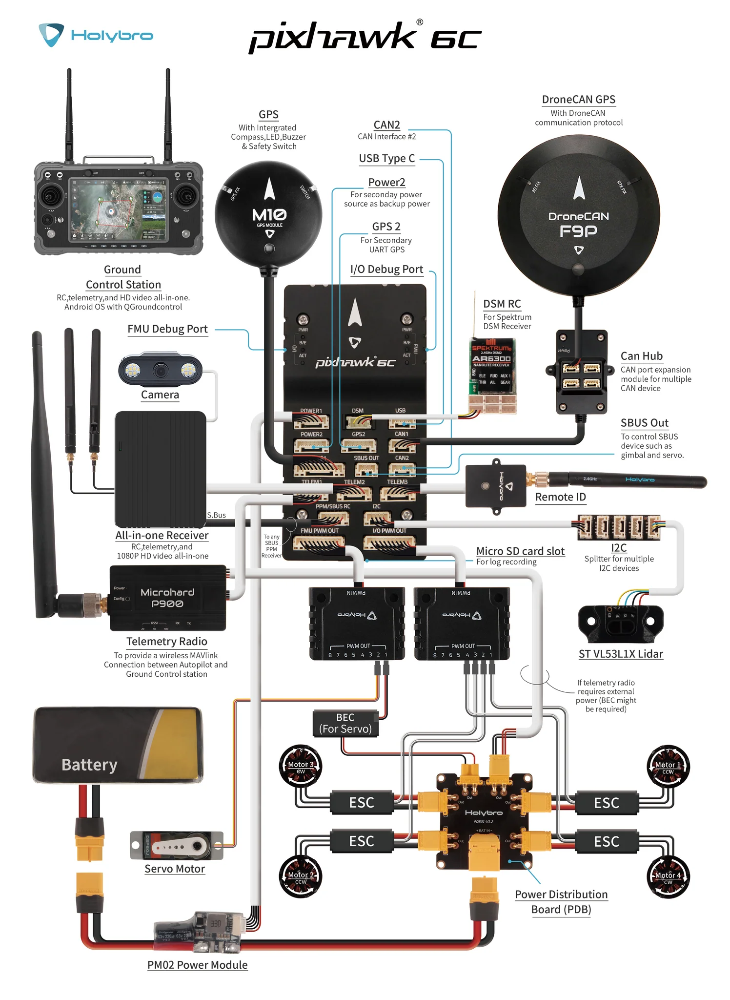
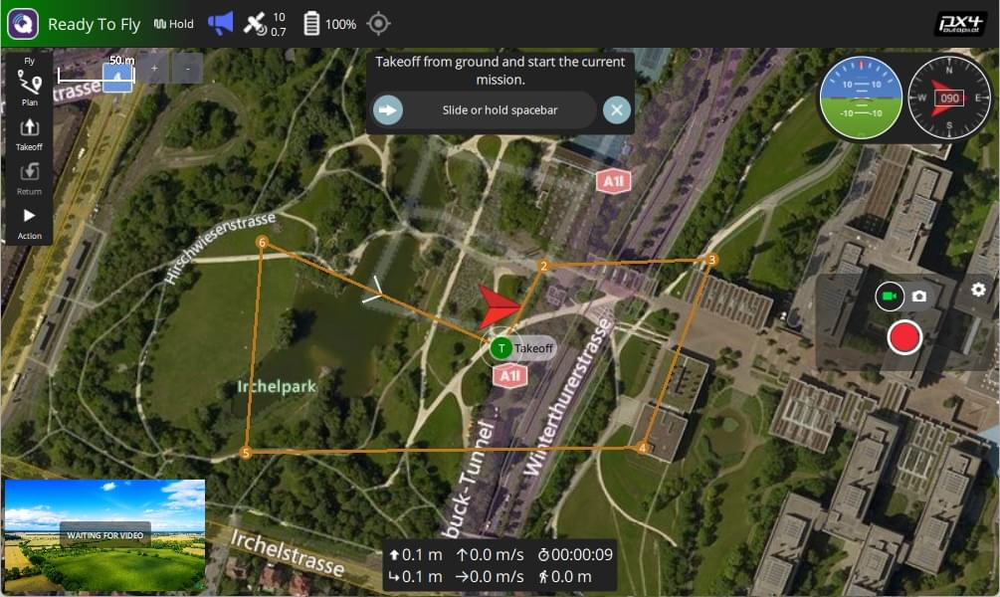

11. Practical 8a: Pixhawk and PX4, Commercial and R&D Autonomous Drone Systems¶
11.1 Overview¶
Pixhawk and PX4 are widely used in autonomous drone development, providing an open-source hardware and software ecosystem for UAV control. In this tutorial, we will introduce:
- Pixhawk: The hardware autopilot platform
- PX4: The open-source flight control firmware
- PX4 Software In The Loop (SITL) Testing
- Creating Missions with QGC
This will help you transition from Crazyflies and Aerostack2 to more advanced UAV platforms.
11.2 What is Pixhawk?¶
Pixhawk is a family of open-source flight controllers developed for UAVs and robotics applications. It provides:
- High-performance autopilot capabilities
- Multiple sensor support (GPS, IMUs, barometers, etc.)
- Compatibility with PX4 and ArduPilot firmware
- Connectivity options like UART, I2C, CAN, MAVLink and DDS
11.2.1 Common Pixhawk Versions:¶
- Pixhawk 4: Standard for academic and research use
- Pixhawk 6X: More advanced processing capabilities
- Pixhawk 6C: Compact version with strong processing power
- Pixhawk Mini: Compact version for small UAVs
11.2.2 How to use a Pixhawk¶
This is the Pixhawk 6C you will be playing around with, see all of the ports for various inputs

This following wiring diagram is from an older Pixhawk model, but should show the key elements of connecting up and powering a Pixhawk

11.3 Flight Control Firmware¶
There is no universal controller design of converting from user inputs to motor thrust. In the same way, there are numerous other functionalities that an autopilot can cover. These can range from running control loops for gimbals, cameras and other actuation, to high level mission following and safety features. These functionalities are bundled into specific autopilot firmware which each offer a slightly different set of features, as well as differing user interfaces each with their advantages and drawbacks.
The two current most common autopilot firmware's in use in research settings are Ardupilot which offers the Arducopter firmware, and PX4 which offers Multicopter firmware. Both these firmwares are very extensive and cover numerous use cases. However, for our purposes we will only cover enabling autonomous flight through observing the mode of the autopilot.
Both Ardupilot and PX4 use the concept of flight modes, where each mode operates and supports different levels or types of flight stabilisation and/or autonomous functions. Traditionally this is for pilots to change between different controller layouts for different applications. It's necessary to change to the correct mode for safe and controllable flight. The following table shows the most often used flight modes within Starling.
| Ardupilot Mode | PX4 Mode | Functionality |
|---|---|---|
| stabilized | manual | Full manual control with RC sticks being sent directly to control roll, pitch, yaw and height |
| PosHold | position | UAV uses onboard sensing to stay in place, RC sticks used to translate position |
| loiter | auto.hold | Automatic mode where UAV stays in the same location until further instructions given. |
| land | auto.land | Automatic mode which attempts to land the UAV |
| Guided | offboard | Navigates to setpoints sent to it by ground control or companion computer |
As mentioned before, the base purpose of the firmware is to provide a given cascading PID controller for converting high level commands to motor thrusts. However both firmwares provide a plethora of other functionality from trajectory following, basic mission following, telemetry and communications and many others too.
As a controller developer, it is also useful to understand the differences between the Ardupilot and PX4 controllers and what real-world impacts they have. In most of drone targeted applications we only require either position or velocity control which works fairly consistently between the two firmwares.
In our own work, it has generally been noted that Ardupilot seems to be more suitable for outdoor flight, and PX4 for indoor flight. For this tutorial we will be developing a controller for indoor multi-vehicle flight and so we will assume the use of PX4. The biggest difference is actually in licensing where Ardupilot's license specifies that any developments must be contributed back, however PX4 is a bit more free allowing the forking and commercialisation without needing the announce or contribute (although this is not necessarily the best for the longevity of this open source project!).
11.4 PX4 Software Stack¶
PX4 consists of:
- PX4 Firmware - The core flight control software
- QGroundControl (QGC) - GUI for setup and mission planning
- MAVSDK (or other communication method) - API for developing drone applications
- Software-In-The-Loop (SITL) - The flight stack runs on computer.
11.4.1 Autopilot communication¶
Once in guided or offboard mode, the autopilot by default expects communications using the MAVLINK protocol. Traditionally this would have been used for a ground control station (GCS) to send commands to a UAV over a telemetry link. However, now it has also developed into a protocol for commanding the autopilot from an onboard companion computer over a USB or serial connection too. The MAVLink protocol is a set of preset commands which compatible firmwares understand and react to. In this tutorial we will primarily be observing the MAVlink interface, but we will not get into writing your own software with MAVlink yet.
With the growing prevalence of ROS2, all of the major firmwares have attempted to provide direct communication using ROS2's underlying communication/middleware protocol of DDS (Data Distribution Service). Although we will not cover this in this module, this is what we currently use to communicate between a companion computer and the Pixhawk for drone work.
Note however that even if DDS is enabled, autopilots will still send Mavlink messages down a Telemetry stream - often a dedicated low bandwidth communication channel for the monitoring of the drone's health and status.
11.4.2 Ground Stations¶
A key element of any drone operation is a competent and reliable ground station setup. The purpose of the ground station is to provide a reliable communication link with the drone and receive telemetry to be able to keep an eye on, and monitor the status of the drone. Often this is done via a second telemtry radio operating on a different frequency - in our case an SIK radio on 433MHz - with one end connected to the drone, and the other connected via USB to a laptop or computer (or handheld games console like the steam deck).
There are a number of choices for a piece of software which runs on the ground station. In industry, you may see Alterion or other softwares which provide an interface. In the open source world we either use mission planner with Ardupilot or QGroundControl with PX4. In this tutorial we will trying to use QGroundControl (QGC).

Tools like QGC are crucial for real-time flight monitoring, control, and mission planning. It allows users to:
- Monitor telemetry data (battery levels, GPS status, IMU readings, etc.).
- Send flight commands such as takeoff, landing, and mission execution.
- Configure drone parameters including PID tuning, sensor calibrations, and failsafe settings.
- Visualize the drone's location and trajectory on a map interface.
- Log and analyze flight data to debug issues or optimize performance.
Ground stations are useful as they enable:
- Safety: Enables real-time monitoring, preventing potential failures.
- Ease of Use: Provides a user-friendly interface to interact with the drone.
- Flexibility: Supports different flight modes (manual, autonomous, guided, etc.).
- Data Logging: Essential for post-flight analysis, AI training, and debugging.
- Remote Control: Operate the drone without requiring direct physical interaction.
11.5 Setting Up PX4 and QGroundControl¶
Now let's set up your PX4.
11.5.1 Setup Overview¶
- Install PX4
- Install QGroundControl (QGC) (Download)
- Run PX4 SITL with jmavsim
- Use QGC to set up some automated flights
- (Not today) Setup offboard control (for AI/robotics integration)
11.5.2 Install PX4¶
11.5.2.1 Ubuntu¶
Create a new directory to contain PX4
mkdir PX4
cd PX4
Git clone and install PX4
git clone --recursive https://github.com/PX4/PX4-Autopilot.git -b v1.15.4
cd PX4-Autopilot
NOTE: You will need the
--recursiveto ensure all the dependencies are also pulled. If you forgot to and your builds are failing, in the root of the repository rungit submodule update --init --recursive.
Install PX4 dependencies including a new lightweight simulator called JMavsim.
cd Tools/setup/
./ubuntu.sh
cd ../../
NOTE: In default, it will automatically install another version of gazebo i.e. gazebo garden. It is an old version of gazebo fortress which you are using for our previous aerostack2 project. It has been tested that it will not affect your settings. So you could just run default ubuntu.sh file or you could also comment off codes for gazebo garden installation as we are using another simulator called JMAVSIM for this session.
11.5.3 Install QGroundControl¶
Follow the following instructions for all platforms:
Now start QGroundControl
See https://docs.qgroundcontrol.com/master/en/qgc-user-guide/getting_started/quick_start.html for how to navigate and use QGC.
11.5.4 Run PX4 STIL¶
Open a terminal and navigate to the PX4_Autopilot repo you cloned earlier, see instructions here https://docs.px4.io/main/en/sim_jmavsim/
# Set Lat Long of UCL East
export PX4_HOME_LAT=51.537668693830824
export PX4_HOME_LON=-0.012029639288719024
export PX4_HOME_ALT=28.5
make px4_sitl_default jmavsim
If you get an error make sure you have recursively git cloned
Tada! After waiting about a minute for the system to initialise itself (It will complain at you a bunch), QGC should show that the system is ready to fly.
11.6 Tasks¶
- Takeoff the drone and manually fly it around the olympic park using the joysticks in the bottom of the screen
- See your trajectory in QGC
Note: If you crash your drone somehow, you may need to restart your flight controller and jamvsim 2. When in midair, right click on a location and you will get some options to fly in a straight line to various locations.
-
Land or return to the start location
-
Have a play with the planning tools
- Once you have made a mission you will need to upload it (this may appear to fail)
- If you can't automatically start it, you may need to manually change the mode to mission.
-
Imagine you were a drone inspection company, do you think this software is suitable for your role?
- What's this software good at?
- What's it missing?
For more details, refer to the PX4 Developer Guide.
This is all we'll cover in this course, as this content could fill a whole other module. In the optional session we will be trying to put some of this into practice on a real drone in the flight arena. Specifically connecting some of this up to ROS2 and Aerostack2 and seeing how this performs!